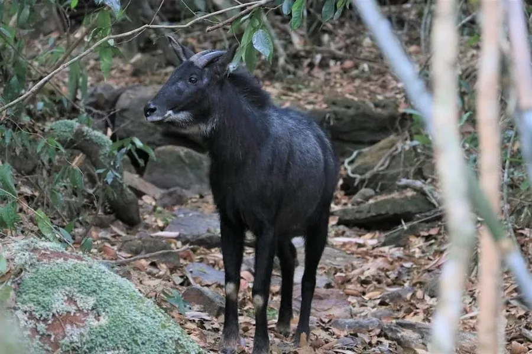

哺乳动物 · 动物界
鬣羚 Capricornis sumatraensis

亚洲山地的大型野山羊近亲，颈背有鬣毛、毛色深褐，善在险峻岩壁攀爬，因盗猎和森林砍伐而数量下降。
- 分类
- 门脊索动物门纲哺乳纲目偶蹄目科牛科属鬣羚属
- 栖息环境
- 海拔 1000–4500 米的陡峭山地与岩壁森林
- 地理分布
- 中国南方、东南亚和南亚的山地，从尼泊尔到苏门答腊
- 保护级别
- IUCN 易危（VU）；中国国家二级保护动物
物种志
鬣羚体长 1.2–1.8 米，肩高 0.8–1.1 米，体重 50–140 kg。它的体形粗壮，被毛为深褐至灰黑色，颈背有一列长而粗的鬣毛，四肢粗壮，蹄大而宽，雌雄都长有短的角，角基部有横棱。
鬣羚分布于中国南方、东南亚和南亚的山地森林，栖息于海拔 1000–4500 米的陡峭山区和岩壁。它以草、树叶、嫩枝和苔藓为食，多在晨昏活动，独自或结成小群，善于在险峻的岩石间攀爬跳跃，受惊时会迅速逃向崖壁。鬣羚性情较孤僻，视觉和听觉灵敏。雌性妊娠期约 7–8 个月，每胎 1 仔。由于非法捕猎、森林砍伐和栖息地破碎，鬣羚数量下降，被列为易危，中国将其列为国家二级保护动物。
形态与习性
- 食性草、树叶、嫩枝与苔藓
- 体长1.2–1.8 m，肩高 0.8–1.1 m
- 体重50–140 kg
- 寿命野外约 15 年
- 繁殖妊娠期约 7–8 个月，每胎 1 仔
- 外形颈背有长而粗的鬣毛，毛色深褐
- 攀爬善在险峻岩壁间攀爬跳跃
趣味知识
- 鬣羚颈背有一列长而粗的鬣毛，因此得名。
- 它善于在险峻的岩壁间攀爬跳跃，受惊时迅速逃向崖壁。
- 鬣羚多在晨昏活动，独自或结成小群。
- 中国将鬣羚列为国家二级保护动物。